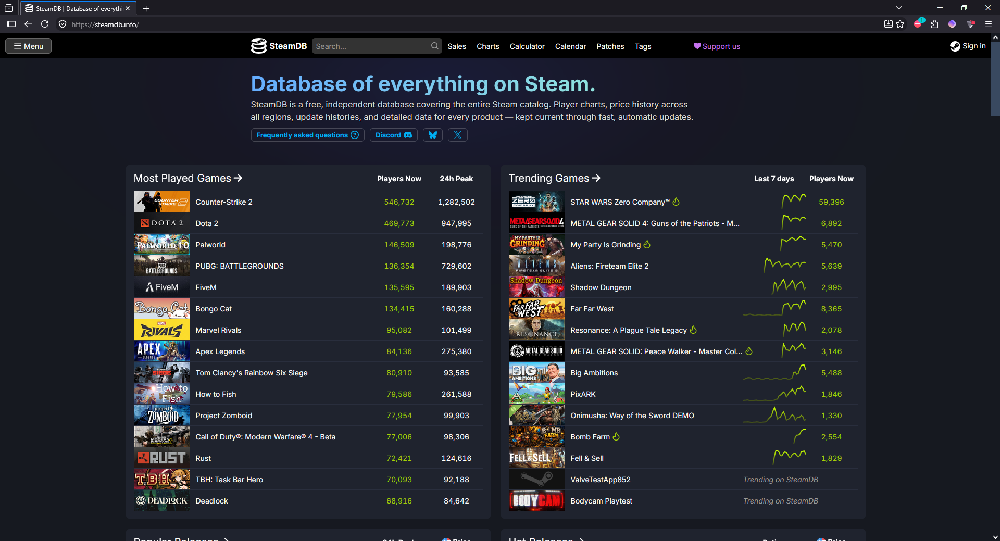
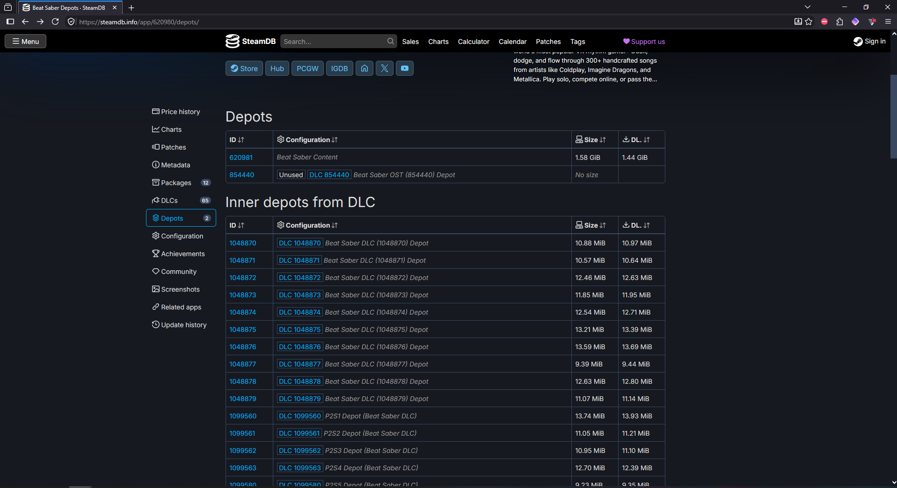
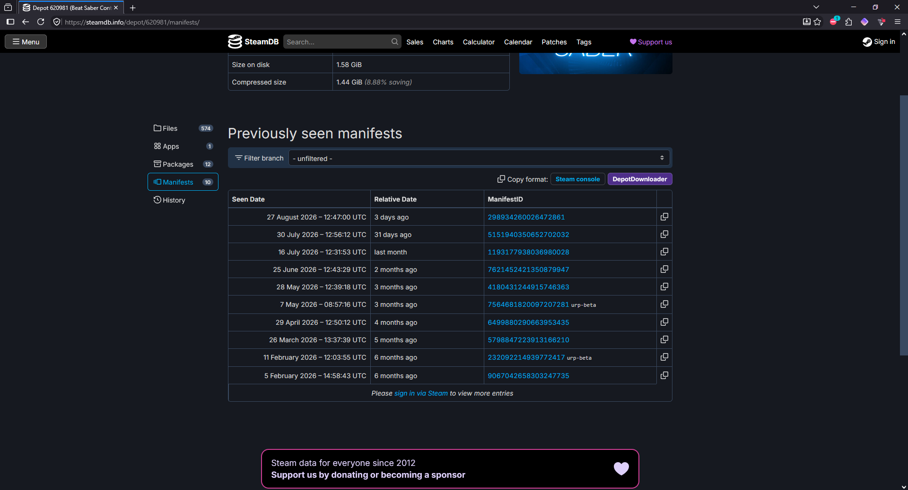
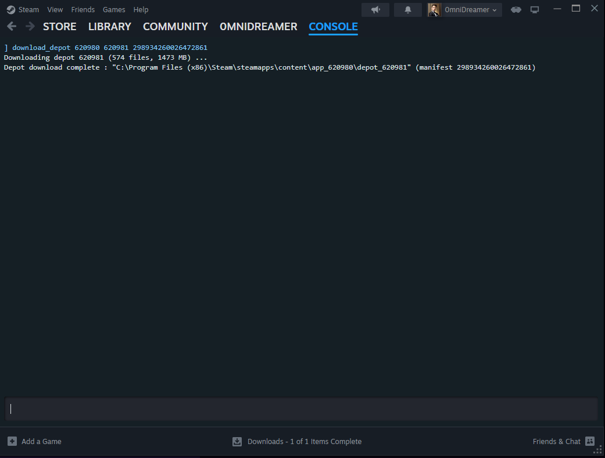

How to Downgrade Steam Apps & Games
Last updated [ add date ]
Need an older build of a Steam game — say, because a mod only works on a specific version? You can pull almost any previous version back down using SteamDB and Steam's own console. It works because SteamDB records every update, so any version that was live after the game's public release can be re-downloaded.
download_depot command, nothing sketchy.
What you'll need
- The game installed through Steam, on the account that owns it
- A few minutes to grab the app ID, depot ID, and manifest ID from SteamDB
- Enough disk space for a second copy of the game while you swap files
Steps
Find the game on SteamDB
Head to steamdb.info and search for the game you want to roll back.

Open its app page
Click the app ID of the correct entry (watch out for "Unstable"/"Dedicated Server" variants — you usually want the plain "Game" row). That opens the game's details page.
Go to Depots and pick one
In the left-hand menu, open Depots, then click the depot ID you want to download — for most Windows games that's the Windows 64 Depot. This opens the depot's own page.

Open the Manifests tab and copy the manifest ID
Click the Manifests tab. Each manifest is a point-in-time snapshot of that depot — i.e. one specific version. Find the date/version you want and copy its Manifest ID (the long number).

By now you should have three numbers written down: the app ID, the depot ID, and the manifest ID.
Open the Steam console
Paste this into your browser's address bar, or the Windows Run box (Win + R):
steam://nav/consolePress enter, and when the "open with" prompt appears, choose the Steam Client. The console opens as a tab inside Steam.
Run the download_depot command
The full syntax is:
download_depot <appid> <depotid> [<target manifestid>] [<delta manifestid>] [<depot flags filter>]You only need the first three arguments. So type the command followed by your app ID, depot ID, and manifest ID — for example:
download_depot 211820 211823 4078134516115892237Wait for it to download
The console shows no progress bar, which is normal. You can confirm it's working by watching network activity on your Steam Downloads page. The download resumes if your connection drops — but not if you restart Steam, so leave the client running.
Note where the files landed
When it's finished, the console prints the output path — something like:
...\Steam\steamapps\content\app_<appid>\depot_<depotid>\
Swap the files into the game folder
Open the game's normal install directory and move its current files somewhere safe (don't delete them — that's your backup). Then copy everything from the downloaded depot folder into the game's install folder.
Fix the EXE name if needed
If the developer changed the launch executable recently, the old files may use a different .exe name than Steam now expects. Check the current name under the game's SteamDB Configuration tab and rename to match if launching fails.
Finished
You should now be able to launch the older version straight through Steam.